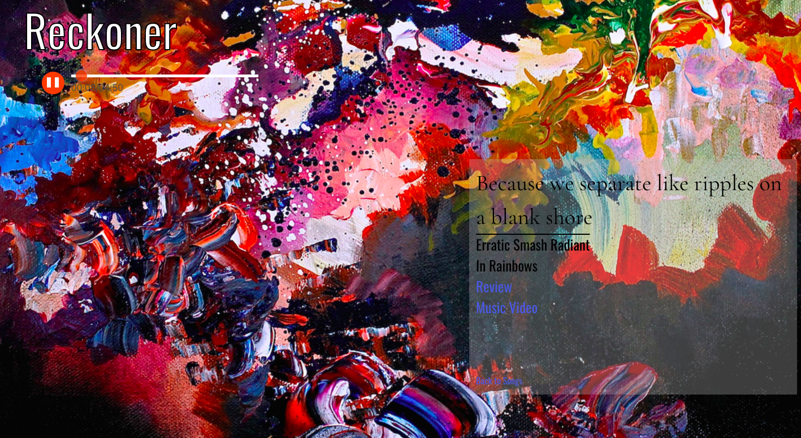
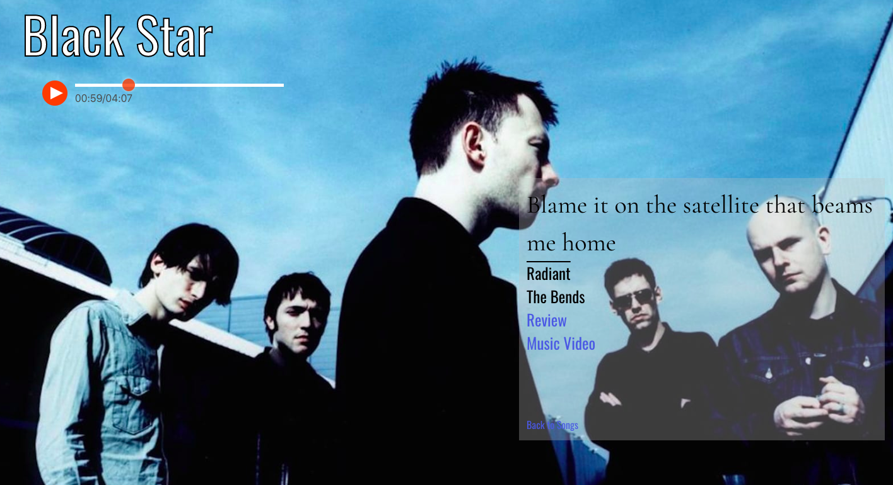
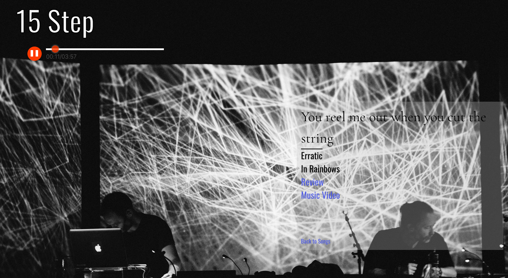
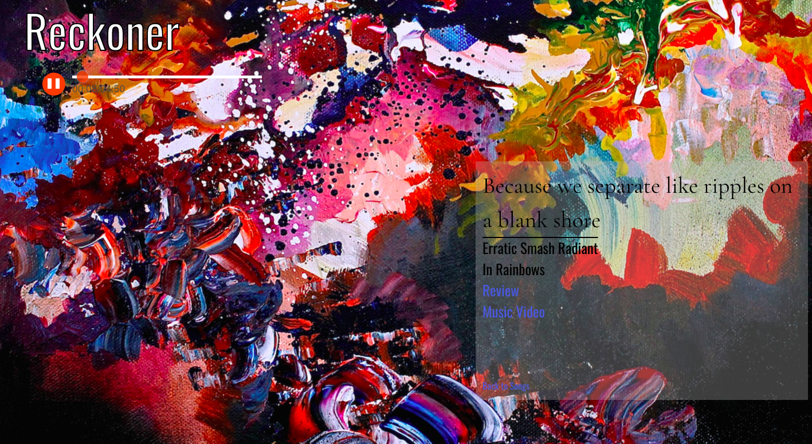
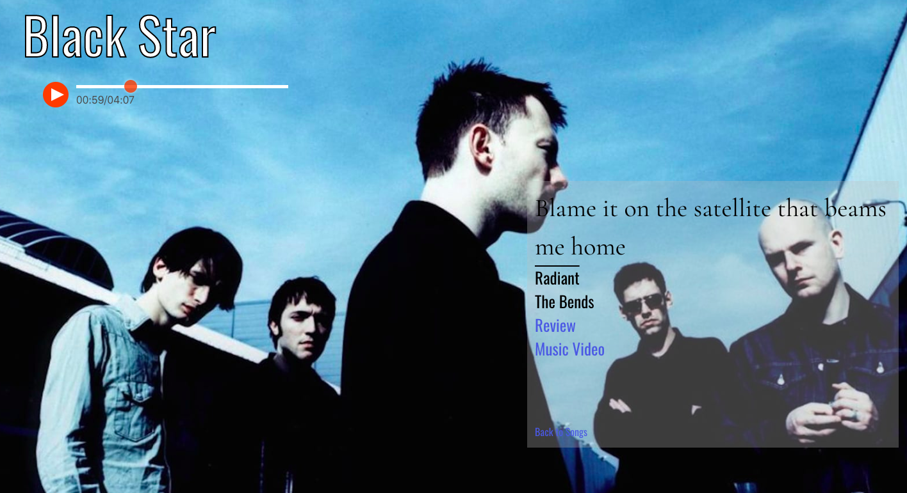
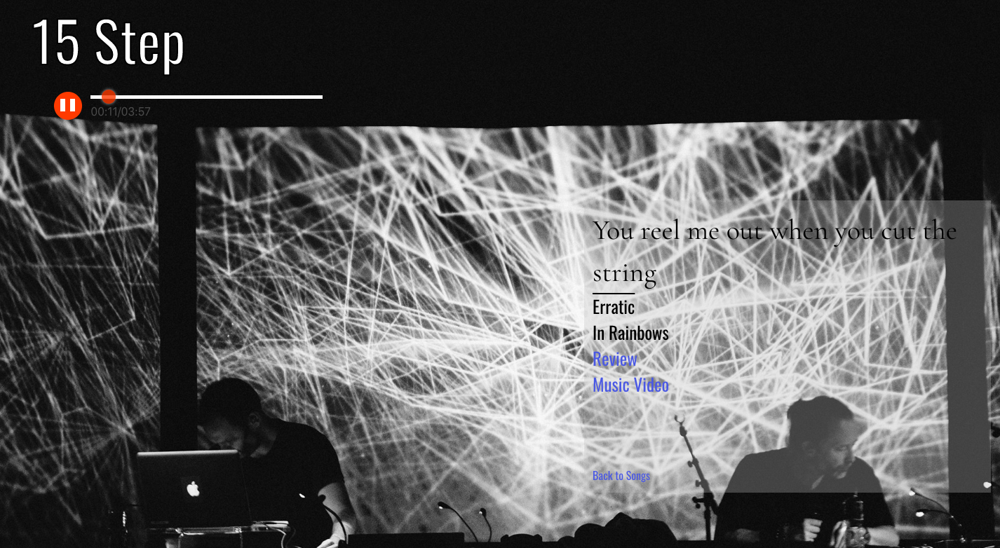

Feeling Radiohead
Solo Project, 7 days
React.js, Flask, Marshmallow, SQLAlchemy
 





It’s been a lot of fun working on a website for Radiohead. It is a band that meant a lot to me when I was younger so I put in a lot of work on the Seeds file to make sure the images relate to the time period of the song, lyric snippets etc. Being able to have the songs autoplay while you take in the information related is great, as well as having links to reviews and the music video without interrupting the song by opening a new tab.
Using Python and Flask I set up an original API to connect to a React Frontend. There was a lot of planning and work on the seeds file. Using Axios to pull the data from the backend I then mapped out each “show profile” on a specific show page that decorates the page according to the slot of data that is present. I learned a lot on the front in selecting proper identifiers of elements. And on the backend getting more used to the crafting of API data, the authentication system and secure paths for register and log ins.
It’s been a lot of fun working on a website for Radiohead. It is a band that meant a lot to me when I was younger so I put in a lot of work on the Seeds file to make sure the images relate to the time period of the song, lyric snippets etc. Being able to have the songs autoplay while you take in the information related is great, as well as having links to reviews and the music video without interrupting the song by opening a new tab.
Using Python and Flask I set up an original API to connect to a React Frontend. There was a lot of planning and work on the seeds file. Using Axios to pull the data from the backend I then mapped out each “show profile” on a specific show page that decorates the page according to the slot of data that is present. I learned a lot on the front in selecting proper identifiers of elements. And on the backend getting more used to the crafting of API data, the authentication system and secure paths for register and log ins.
Deutschstagram
Group Project (3 people), 7 days
React.js, Node.js, Express, MongoDB

We built a MERN stack website that users can log in, post pictures about a country, like and comment on pictures, follow other users as well as having a language option that translates the specific chat section. Trello worked very well for us to set up what we need to do for each part of the day, and was very much on time with schedule all the way through.
The project was originally made for Vietnam, a popular holiday destination. After the course I re-designed the website to Germany as practice and deployed it with a new name.
Random Phrase Translator
Pair Project (2 people), 2 days
React.js (Express, Axios, Webpack)
For this 2 day React-athon, one of the students and I worked on creating a random phrase translator available for more than 20 languages with the option of using the odd phrases that I came up with.
Tetris
Solo Project, 7 days
JavaScript (Vanilla)

I built Tetris on vanilla JavaScript. File structure is simply HTML, CSS and JavaScript as it’s vanilla without frameworks. Using a numbered board, I arranged different classes for the block shapes to travel around the board by altering their number (location) on every action.